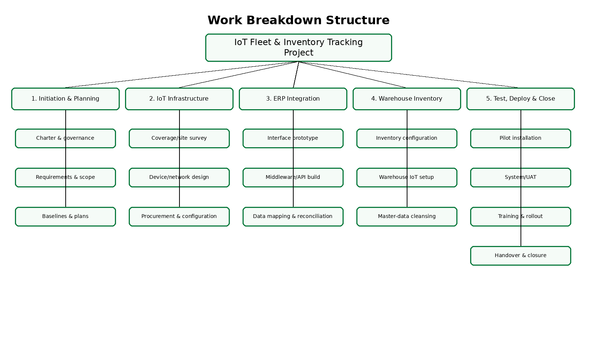
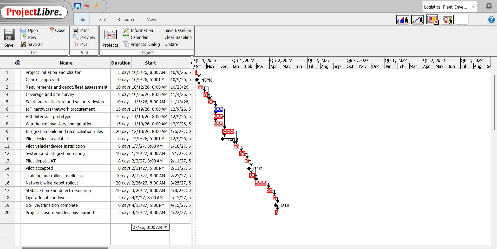
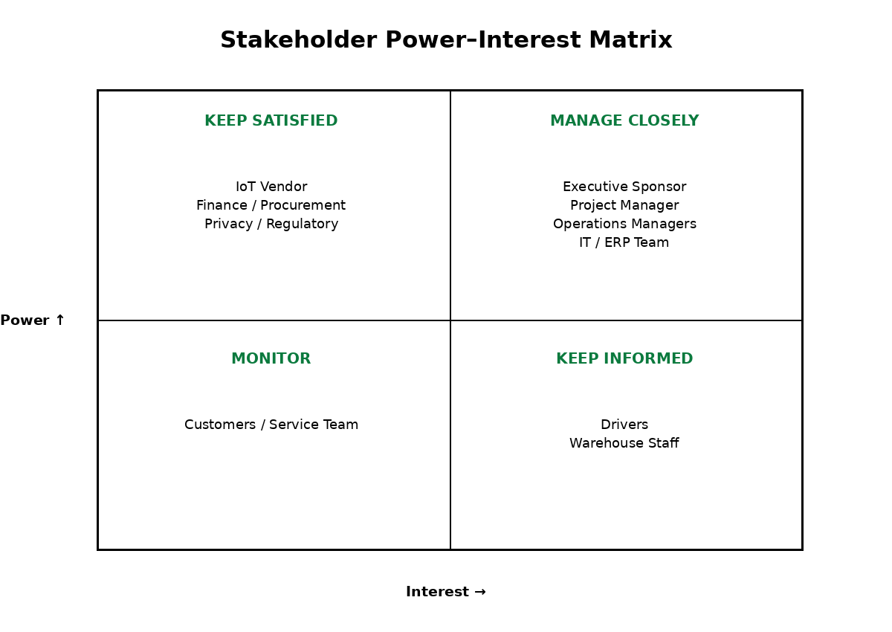
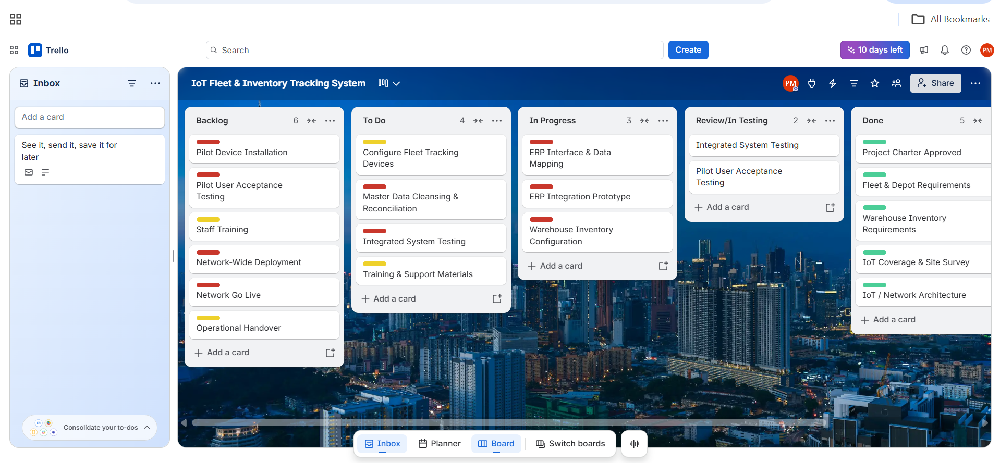

1. Project Overview, Charter & Scope
Business Problem
Fragmented fleet and warehouse visibility can delay vehicle monitoring, stock reconciliation and operational decisions. The ageing ERP must remain operational while new IoT capability is introduced.
Proposed Solution
Deploy vehicle IoT trackers, warehouse readers/sensors and a central tracking layer integrated with the existing ERP through controlled interfaces.
Purpose
Improve fleet visibility, inventory accuracy and operational decision-making without replacing the existing ERP during this project.
Project Charter
| Item | Project Position |
|---|---|
| Sponsor | Executive Operations Sponsor (planning assumption) |
| Project Manager | Logistics Technology Project Manager (planning assumption) |
| Development approach | Hybrid. Predictive planning controls procurement, infrastructure, integration gates and rollout; iterative configuration, interface prototyping and testing reduce technical uncertainty. |
| Objectives | Reliable fleet visibility; ≥99% inventory transaction accuracy; approved ERP integration; controlled pilot and network rollout; training, handover and benefits measurement within baseline. |
| Deliverables | Charter/plans, IoT architecture, vehicle devices, warehouse IoT configuration, ERP interfaces, cleansed data, tested pilot, training, rollout and handover. |
| In scope | Fleet and depot IoT equipment; integration; configuration; testing; training; pilot and phased rollout. |
| Out of scope | ERP replacement, predictive-maintenance analytics in initial release, customer mobile app, expansion beyond assumed depot network. |
| Constraints | Ageing ERP, operational continuity, October 2026–April 2027 delivery window, A$560,000 project baseline and limited installation windows. |
| Success criteria | ≥95% valid fleet location records; ≥99% inventory accuracy; ≥99.5% interface success; zero Severity-1 defects at go-live; ≥90% training completion. |

2. Schedule, Cost & Resources
The ProjectLibre schedule runs from 5 October 2026 to 22 April 2027 and progresses through initiation, requirements, site assessment, solution design, IoT procurement, ERP integration, warehouse configuration, testing, pilot deployment, training, network rollout, stabilisation and closure. Key milestones include Charter Approved, Pilot Devices Available, Pilot Accepted and Go-Live / Transition Complete.
The ERP interface prototype and integration build are significant dependencies because testing and pilot deployment rely on stable data exchange with the ageing ERP. The critical-path sequence identifies activities that directly influence the completion date. A delay to a critical activity can move dependent milestones unless an approved recovery action offsets the delay.

Cost & Resources
| Area | Planning Basis |
|---|---|
| Baseline | A$560,000 project planning baseline. |
| Human resources | Project Manager, IoT/Network Engineer, ERP Integration Developer, Warehouse Systems Specialist, QA/Test Lead and Training/Change Lead. |
| Other major costs | 120 assumed vehicle devices, warehouse IoT equipment, cloud/software/integration licences and deployment contingency. |
| Cost relationship | Longer integration or rollout activities increase specialist labour and can extend software/vendor costs. Resource assignments therefore link schedule performance directly to cost performance. |
3. Risk, Stakeholder & Communication Management
Risks use a 1–5 likelihood and impact scale. Score = likelihood × impact. The three highest planning priorities are ERP integration incompatibility (20), IoT connectivity gaps (16) and inventory data mismatch (16).
| ID | Risk | L | I | Score | Owner | Response / Mitigation |
|---|---|---|---|---|---|---|
| R1 | Legacy ERP integration incompatibility | 4 | 5 | 20 | ERP Integration Lead | Mitigate — prototype early, middleware, rollback plan. |
| R2 | IoT connectivity gaps | 4 | 4 | 16 | IoT Engineer | Coverage survey, multi-network SIMs, store-and-forward. |
| R3 | Cybersecurity/privacy breach | 3 | 5 | 15 | Security Lead | Encryption, RBAC, MFA and security testing. |
| R4 | Device installation delays | 3 | 4 | 12 | Deployment Lead | Staged installation and spare devices. |
| R5 | Inventory data mismatch | 4 | 4 | 16 | Warehouse Systems Lead | Cleanse, reconcile and validate before cutover. |
| R6 | User resistance / low adoption | 3 | 4 | 12 | Change Lead | Engagement, champions, training and support. |
| R7 | Vendor supply/hardware delay | 3 | 3 | 9 | Procurement Lead | SLA, alternatives and buffer stock. |
| R8 | Integration-driven budget overrun | 3 | 5 | 15 | Project Manager | Cost tracking, change control and contingency. |
| R9 | Operational disruption at cutover | 2 | 5 | 10 | Operations Manager | Pilot, off-peak cutover and rollback. |
| R10 | Inaccurate GPS/sensor data | 3 | 3 | 9 | QA Lead | Calibration, thresholds and exception monitoring. |

Close management is required for the sponsor, Project Manager, depot/operations managers and IT/ERP team. Drivers and warehouse staff require regular involvement because adoption and usability influence benefits. Communication combines fortnightly governance, weekly operational readiness, twice-weekly technical coordination, vendor meetings, training briefings and monthly cost reporting.
4. Quality, Change & Team Management
| Quality Measure | Target | Measurement | Owner |
|---|---|---|---|
| Fleet location validity | ≥95% | Pilot route/data-quality comparison | IoT Engineer |
| Inventory transaction accuracy | ≥99% | Cycle-count reconciliation | Warehouse Systems Lead |
| ERP interface success | ≥99.5% | Integration logs/exceptions | ERP Integration Lead |
| System availability | ≥99.5% | Monitoring dashboard | Technical Lead |
| Critical defects at go-live | 0 Severity-1 | Defect register/release gate | QA Lead |
| Training readiness | ≥90% | Training records/competency check | Change Lead |
Change Control
| Change | Impact | Decision | Reason |
|---|---|---|---|
| Predictive-maintenance analytics in initial release | High scope; +4 weeks; approx. +A$70k | Deferred | Valuable but not required for core release. |
| Multi-network SIM capability | Low/medium scope; +1 week; approx. +A$18k | Approved | Directly reduces high-priority connectivity risk. |
| Replace legacy ERP during project | Very high scope; +4–6 months; A$400k+ | Rejected | Outside project objective and changes the risk/budget profile. |
The RACI assigns governance accountability to the sponsor, delivery coordination to the Project Manager and execution responsibility to technical specialists, QA and change roles. This keeps approval authority separate from specialist delivery.
5. Project Tracking & Dashboard
Trello workflow: Backlog → To Do → In Progress → Review/Testing → Done. Card names should match WBS work packages and ProjectLibre activities so that the board shows execution of the approved plan.

Project Dashboard
AMBER
AMBER — integration/pilot path requires close control.
GREEN — A$560,000 planning baseline.
GREEN — core scope stable; predictive analytics deferred.
AMBER — connectivity and integration are key gates.
Workflow progress monitored through ProjectLibre and Trello.
Management action: complete an early ERP integration prototype and connectivity survey before fleet-wide deployment. Use the pilot depot as a release gate and approve rollout only after critical defects are closed and reconciliation/availability targets are met.
6. Integration & Final Management Recommendation
The project is viable if rollout remains stage-gated. Its strongest expected achievement is integrated fleet and inventory visibility without requiring immediate ERP replacement. The most significant risk is legacy ERP integration, and the most important schedule concern is delay to integration/testing before the pilot. Operational managers and frontline users require close engagement because disruption or low adoption would reduce benefits.
Management should complete the ERP prototype, connectivity survey and pilot acceptance before authorising network-wide rollout. Quality gates should prevent rollout until interface reliability, inventory accuracy and critical-defect targets are achieved. Expected business value includes faster operational decisions, improved stock accuracy, better fleet visibility and a stronger data foundation for future optimisation.